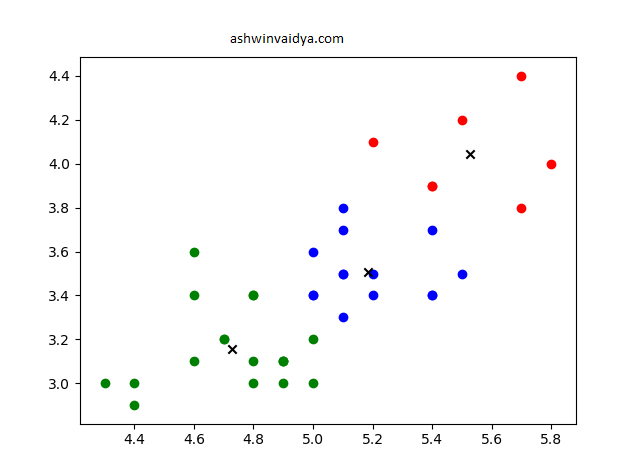

K-Means Clustering
Table of Contents
What is it?
Suppose we have data of various users from a social media. The data might contain information regarding their friends, interests, posts, etc. This is an example of multidimensional data. Further, this data is unlabeled. Which means that we don’t know what we are looking for. Now, suppose we want to find some interesting pattern in this data, we can use a clustering technique. Clustering is basically grouping data points into various classes. One such method of clustering is k-means clustering. It is an unsupervised machine learning technique which helps us find hidden patterns. In K-means, k such clusters are created. In our social media example, one such pattern which might be revealed to us might be that people from a certain age group and in a particular area might share an interest in a particular genre of TV shows. This insight can be then used to target that demographic with some product or content.
| Steps | Pseudocode |
|---|---|
| 1. | Initialize k centroids. Usually k random point in the dataset are selected as initial centroids |
| 2. | Compute distance from each data point(xi, yi) to each centroid. Distance is calculated using Euclidian distance measure. |
| 3. | Assign the point to the centroid which is closest to it. |
| 4. | Now, compute the new centroid of each cluster. |
| 5. | Repeat steps from 2 till the centroids do not change or if they iterate between previous and next. |

Code
Using sklearn
from sklearn.cluster import KMeans
# Dummy data for this example
X = [[5.1,3.5],[4.9,3.0],[4.7,3.2],[4.6,3.1],[5.0,3.6],[5.4,3.9],[4.6,3.4],[5.0,3.4],[4.4,2.9],[4.9,3.1],[5.4,3.7],[4.8,3.4],[4.8,3.0],[4.3,3.0],[5.8,4.0],[5.7,4.4],[5.4,3.9],[5.1,3.5],[5.7,3.8],[5.1,3.8],[5.4,3.4],
[5.1,3.7],[4.6,3.6],[5.1,3.3],[4.8,3.4],[5.0,3.0],[5.0,3.4],[5.2,3.5],[5.2,3.4],[4.7,3.2],[4.8,3.1],[5.4,3.4],[5.2,4.1],[5.5,4.2],[4.9,3.1],[5.0,3.2],[5.5,3.5],
[4.9,3.1],[4.4,3.0]]
model = KMeans(n_clusters=3) #n_clusters creates 3 clusters
model.fit(X)
labels = model.labels_ # stores the class labels for each datapoint. In this example label would be assigned from 0,1,2
centroids = model.cluster_centers_ #to plot each centroid. Not necessary

Few Notes
- The clusters formed depend on the initial values of centroids. It is a good idea to run k-means a few times to get a correct idea of the clusters.
- Try experimenting with different distance metrics and seeing how it affects the clusters.
Source
You can get the source code from GitHub